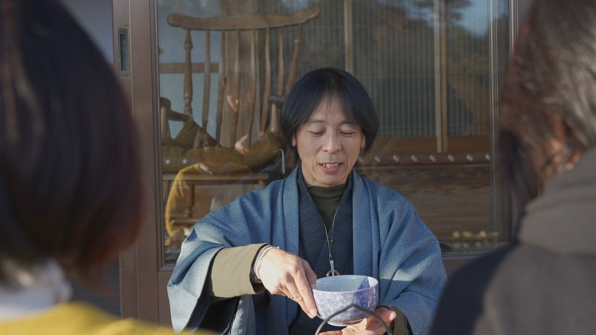

刀から入る人。お茶から入る人。数字から入る人。呼吸から入る人。
入口は、違っていてかまいません。
誰と居るかで、呼吸って結構変わる気がしています。
どんな空気の中に身を置くか。それって、思っている以上に大事なんだと思います。
ここに来る人に、特別な条件はありません。
職業も、年齢も、性格も、趣味も、障害の有無も関係ない。
それぞれが、自分の得意や興味を持って来られる場所。
それぞれが無理をせず、補い合える場所。

自在流 殺陣・息道
福和倭迅会（ふくわ わじんかい）代表
殺陣の人。お茶の人。数秘の人。
たぶん、どれも間違っていません。
でも、自分の中では、どれも入口です。
自分が本当に作りたいのは、場です。
詰め込みすぎない方が、人って勝手に動き始める気がしています。
気づいたら、それぞれが自分の役割を見つけている。
「ここに居ていいんだ」
そんな感覚が生まれる場所を作りたいと思っています。
刀から入る人。お茶から入る人。数字から入る人。呼吸から入る人。
入口は、違っていてかまいません。
誰と居るかで、呼吸って結構変わる気がしています。
どんな空気の中に身を置くか。それって、思っている以上に大事なんだと思います。
ここに来る人に、特別な条件はありません。
職業も、年齢も、性格も、趣味も、障害の有無も関係ない。
それぞれが、自分の得意や興味を持って来られる場所。
それぞれが無理をせず、補い合える場所。
教える場所というより、思い出す場所。
正解はすでに、あなたの身体の中にあります。
たった3分の1無くなっただけで、それまで無意識にできていた呼吸が、急に苦しくなりました。
最初に違和感を感じたのは、入院中の寝巻きでした。
寝巻きのズボンのゴムが、お腹を横一文字に締める。それだけで、息が入りづらい。
自分でも驚きました。
逆に、帯を締めた時は違いました。腰骨の位置で身体が安定し、息が自然に入ってくる。
その時、改めて実感しました。
無理をしている自覚は、あまりありませんでした。
満員電車、都心の空気、決められたルールの中で自分の意見を飲み込み続ける働き方。
今振り返ると、あの働き方は、少しずつ呼吸を浅くしていたんだと思います。
身体は、言葉より先に知っていました。
洋装が悪いわけではありません。ただ、自分の身体には合わなかった。
帯は、腹を必要以上に締め付けず、身体を支えてくれました。
ここは、誰かが強く引っ張る場所ではありません。自分は、どちらかというと待つ側の人間です。
前に立って管理するより、見て、聞いて、必要な時にだけ返す。そのくらいが、ちょうどいい。
管理されすぎた場所は、少しずつ息苦しくなっていく気がします。
もちろん最低限のルールは必要です。でも、禁止事項ばかり増えると、人は自然に動けなくなる。
無理をして同じ形になろうとせず、違うままで共生している。
多分、ずっと昔から、 そういう場所が欲しかったんだと思います。
私が目指しているのは、「教室」というより、縁側に近い空間です。
ふらっと来てもいい。ただ居るだけでもいい。話したくなったら話せばいい。
参加したくなったら、その時に参加する。
少しギルドみたいな場所。そんなモノが作れたら面白いな、と思っています。
違う入口を持つ人が、自然に出会える場。
違うまま補い合い、自然に機能していく状態。
帰る頃、少し呼吸が楽になっている。それだけでも、十分だと思っています。
ずっと、息が詰まっていました。でも当時の自分は、そのことに気づいていませんでした。
言いたいことを飲み込む。言葉にならない。「なんでもない」と笑う。
人のいい顔だけ貼り付けて、なるべく自分を消そうとしていた時期があります。
自分を出すことは、誰かの迷惑になる気がしていました。
今も、全部解決したわけではありません。まだ途中です。
ただ、身体が変わったことで、ようやく少しずつわかってきました。
人は、無理をし続けると、呼吸から先に苦しくなるのだと。
だから、変わらなくていいんです。
変わるのは、本人が願った時だけだから。
ただ、きっかけくらいは渡せるかもしれない。そのくらいに思っています。

幸結来 ―サムライ―
祭りで出会った書家へ、殺陣での刀の所作をお伝えした際、
「文字が降りてきた」と言って贈っていただいた言葉です。
幸せを結び、来たる。今も大切に持ち歩いています。
地域のマルシェで、殺陣体験・数秘術鑑定・テーブル茶道体験などを実施。
「
知っているつもりだった日本文化を、改めて知れた」「"あぁ、自分だな"って感じがした」
——そんな声をいただいています。
芦ノ湖の湖上、お茶をテーマにした船内でのお点前体験。
正座不要のテーブル茶道で、初めての方でも楽しめる内容です。
静かな中に、いろいろな感覚が詰まっている時間を大切にしています。
会場・人数・目的に合わせて、その場が一番活きる形を一緒に考えます。
まずはLINEなどから、気になったタイミングでご相談ください。
その違和感を、無理に消さなくて大丈夫です。
来たくなった時は、いつでもどうぞ。ここで待っています。
初めて歓迎 / 見学・相談可能 / 体調優先
神奈川県西湘地区を拠点に活動中。まずは希望内容をお知らせください。